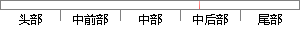

图4-4 任务控制块的相关变量
片段位置图

相似结果
相似片段：..31 图3.3空任务控制块列表???32 图3-4修改后...并保存在相关变量中 *eft=OSN ERR;//获得信号量,...设置的延时时间图4-4延时函数精度分析由图4—4可知...
| 标题 | 《一种基于μC/OS-Ⅱ空间机器人操作系统的研究》 |
| 对比库 | 中国学位论文全文数据库 |
| 作者 | 童丹 |
| 机构 | 北京邮电大学 |
| 分类 | 检测技术及自动化装置 |
| 年份 | 2009 |
| 相似率 | 100% （严重抄袭） |
※ 片段修改建议 ※
近似词参考：- 控制：节制
- 任务：使命 义务
- 相关：相干
系统自动生成语句：图4-4 使命节制块的相干变量
注：本片段修改建议为系统自动生成，仅供参考。